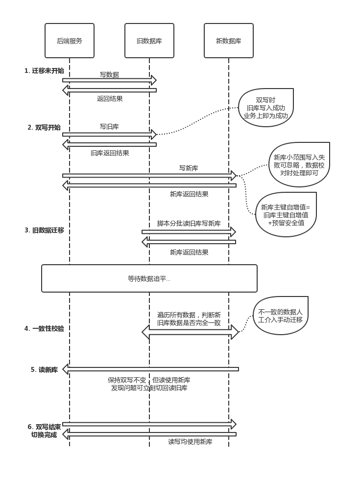

一、背景及目标
由于历史原因，公司数据库没有按照业务线隔离，数据库和表划分混乱，个别库名含义不够清晰以至于混杂了很多不相关的业务表。为此，希望重新规划数据库分类，并迁移相应的数据表到新库中，迁移过程只涉及到表所在库的更改，不涉及表结构的变化。非核心业务表可以通过部分页面短时间停止服务离线迁移，但核心业务不可停机，必须通过在线迁移的方式完成，下面将对实际的在线迁移过程做出介绍。
二、迁移方案
1. 整体迁移流程

2. 系统改造
代码层面：
(1) model层改造：数据库连接中的库名、复杂连表SQL中的数据库名需要修改
(2) 切换开关：设置数据库切换开关，可以一键切换双写/单写旧库/单写新库/读新库/读旧库
其中双写方式可以为在代码里直接同步双写（简单但增加耗时），也可以通过消息队列由consumer进程操作双写（复杂但不影响耗时）
数据库层面：
(3) 主键自增长值修改：新表主键自增长值需要超出旧表主键自增长值一部分，中间的空档供“获取到旧版主键-设置新表主键-开始双写”时间内新产生的数据使用
注意：这种方式迁移后新旧表主键不一致，但自增ID不应当包含业务逻辑，故这样处理没有问题。
3. 新库稳定性测试
该步骤为可选步骤，主要用于对比新旧库性能，以判断新库能否承担相应的读写压力。在实际迁移中，新旧库性能据DBA和运维判断差异不大，没有实际进行稳定性测试。
(1) 新数据库性能测试
(2) 线上流量回放，使用tcpcopy将一部分线上流量复制到连接新数据库的沙盒机器，观察数据库压力是否正常
4. 开启双写
之前说过双写既可以同步双写也可以异步双写，实际迁移中采用同步双写，分析之前的线上日志绝大多数SQL执行时间<100ms，意味着每个接口同步双写最多会增加100ms左右的耗时，在业务上是完全可以接受的。
双写过程中，业务上执行结果全部以旧库的执行结果为准，分布式事务很难保证一致性。少量的旧库写入成功、新库执行失败只记录日志不报错，可以在最后的数据一致性校验阶段人工修正数据。如新库大量写入失败可暂时下线双写，不会影响旧库的正常数据。
5. 旧数据迁移
新增数据已经同时出现在两个库中，接下来可以迁移原有数据，通过数据比对很容易找出双写开始的时间点，DBA会使用脚本对旧数据分批进行迁移，此时应注意观察数据库压力，是否会对线上业务造成影响。
旧数据迁移过程没有明显的风险点，如个别数据迁移失败重新执行即可，主键自增长如果预留了充足的安全区不会出现主键冲突，如安全区不够发生了主键冲突，只能清除掉新表数据，重新设置主键，从双写重新进行迁移。
6. 一致性校验
旧迁移完成后，理论上新旧两库存量数据和新增数据应该保持完全一致，全量对比两个表的数据并记录下不一致的数据。由于主键会产生变化，可通过其他字段索引数据，如uid、product_id等，比如在迁移商品表时，判断同一个uid对应的商品信息按照product_id排序得到的结果是否完全一致？不仅旧表需要和新表比对，新表也需要和旧表比对，确保数据完全一致。
7. 读新库
确定数据一致之后，可切换一部分小流量读取新库，注意这时仍然保持双写不变。理论上不会有任何影响，一旦出现问题说明新旧库数据不一致，需要手工数据不一致排查原因、以及一致性校验没有发现问题的原因。出现问题后，可将读流量切回旧库，不会造成严重影响。
之前说到业务上的执行结果以旧库执行结果为准，在读流量完全切换为新库后，执行结果应改为以新库执行结果为准。
8. 关闭双写，只写新库
之前几个步骤中一直保持双写，故一旦有无法解决的问题，都可以恢复到双写之前的状态，然后清除新库数据，从双写重新开始迁移。
如果没有问题，此时关闭旧库的写入，只向新库写入数据，这样读写均在新库上，在线迁移完成。
三、QA
1. 先双写、后迁移数据，还是先迁移数据、后双写？
都可以，而且两种方式均无法保证迁移前后主键完全一致。
如先迁移数据，由于线上数据不断产生，在“旧数据迁移完成后，双写开始前”这段时间里产生的数据需要做记录并且写入到新数据库中，那么主键的自增值还是需要预留一段安全区间，无法保证迁移前后主键一致。
2. 业务上用到主键自增值怎么办？
换主键？！改造业务、增加字段使业务不使用主键？！或者干脆离线迁移。